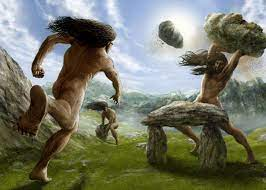
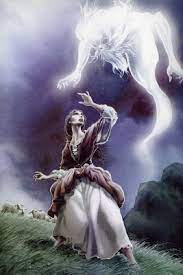
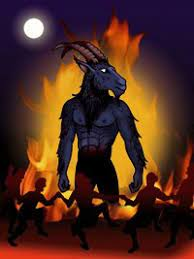

PERSONAJES
PERSONAJES MITOLOGICOS
Como muchas otras, la cultura vasca tiene sus propios mitos y leyendas. Desde la prehistoria y tras la influencia cristiana y romana, la mitología vasca ha sido modificada a lo largo de los años,
siendo esta rica y amplia en personajes y leyendas.
En la cultura vasca hay una gran variedad de personajes cuyas historias se siguen escuchando hoy en día y que destacan por ser los más conocidos y los más curiosos.
¿Quieres conocer cuales son y sus caracteisticas?
gentiles, lamias, tártalo, basajaun, brujas, mari, zezengorri, sugaar, gaueko, zozomikoteak etc.

GENTILES
Los gentiles, es decir, los vascos de la era precristiana, son gigantes y fornidos. Viven en el monte y lanzan grandes piedras a sus enemigos. Ellos construyen, por ejemplo,
los menhires (piedras de gentiles) y crómlech (huertas de gentiles),
así como numerosas iglesias, puentes y casas del País Vasco. También se les conoce como Mairuak.
Conocen la agricultura antes que nadie y han enseñado muchas cosas al ser humano. Este tipo de seres tiene gran difusión en la mitología indoeuropea.Según cuenta la leyenda los Jentiles eran
los pobladores de la zona antes de la llegada del cristianismo. Cuando la religión cristiana fue instaurada,
los Jentiles se refugiaron alejados viviendo pacíficamente. Se les atribuye una fuerza inhumana.
Según la leyenda los Jentiles lanzaban grandes peñascos desde altos barrancos. Estas enormes piedras se hacían llamar Jentilarris. Hoy en día ocupan sitios actuales tales como los del barranco de Urdiola,
el de Markola (Karrantza) o el de Amil (en Mutriku).
Además se cree que en la cumbre situada sobre el puerto de Arrateta (Ataun) fueron enterrados los gentiles que en su última etapa habían vivido en aquel lugar.
Es conocido con el nombre de Jentilbaratza.

LAMIAS
Las lamias son bellas criaturas con aspecto de mujer y que suelen estar en ríos. Tienen una pata de pato o cabra, peinan su cabello con un peine de oro y embelesan al ser humano.
Aparecen también en la mitología griega y romana.

TÁRTALO


BASAJAUN
Basajaun, un enorme hombre con el cuerpo cubierto de pelo era el hombre del bosque y protector de los rebaños y pastores. Se dice que tenía un pie humanoide y otro en forma de pezuña.
Y a menudo es llamado el yeti vasco. Este avisaba a los pastores cuando se aproximaban tormentas y temporales. Vivía en lo profundo del bosque y se le atribuye la invención de la sierra y el molino.
Su propio nombre define quién era: El señor del bosque. Es alto y fuerte y el cabello le llega hasta las rodillas. Además de cuidar el rebaño, avisa a gritos al pastor cuando se acerca una tormenta.
Protege al ganado frente a los lobos y cuando está cerca las ovejas mueven sus cascabeles..
See Profile
BRUJAS
Por la noche las brujas de noche celebran unas reuniones llamadas aquelarre. Con frecuencia adoptan forma de gato, burro o bestia y generalmente les falta alguna parte del cuerpo (mano, pierna o cabeza).
Entre los siglos XV y XVII se celebraron muchos juicios contra brujas en el País Vasco y en los mismos se mezclaban creencias populares, religión, disputas vecinales y política.

MARI
También es conocida como ‘la dama del Anboto’, ‘la dama de Aralar’, ‘la dama de Muru’ o ‘la bruja de Aketegi’. Mari es la diosa más importante de la mitología vasca y según los historiadores
es anterior a la llegada del cristianismo. La leyenda cuenta que Mari vive en las cuevas del monte Anboto y se iba moviendo entre los distintos montes. Tenía poder sobre las tormentas y
sobre la naturaleza y solía ser cruel ante la mentira o el orgullo.Generalmente se representa con cuerpo y rostro de mujer, elegantemente vestida (normalmente de rojo).
También aparece como árbol, águila, vaca o mujer de fuego. Sugaar es su pareja. Vive en cuevas de muchos montes (Larrunarri, Murumendi…)

ZEZENGORRI
Zezengorri es un ser que vive en cuevas. Adopta forma de vaca o toro y protege las moradas de Mari. Hay personas que creen que es la propia Mari.
Cabe destacar que el toro ha sido muy importante en toda la cultura del sur de Europa.

SUGAAR
Sugaar es el marido de la diosa Mari. Tiene forma de serpiente y está muy ligado a tormentas y truenos. Entre otros, castiga a niños y niñas que no obedecen a sus progenitores.

GAUEKO
Gaueko es el señor de la noche y no permite al ser humano trabajar de noche.Gaueko atrapa y se lleva a los jóvenes que suelen realizar proezas y apuestas por la noche.

ZOZOMIKOTEAK
En varios pueblos de Gipuzkoa y Navarra se denomina Zozomikoteak a los dos últimos días y medio de marzo y a los dos primeros días y medio de abril.
Se trata de la época en la que los tordos comienzan a construir su nido.

OLENTZERO
Probablemente este sea uno de los personajes mitológicos favoritos de los niños. El Olentzero era un carbonero solitario al que le encantaba comer y beber buen vino de la tierra. Vestía con colores
muy oscuros y siempre iba acompañado de una txapela y una pipa. Se dice que el Olentzero bajaba de la montaña en nochebuena para llevar regalos a todas las casas de Euskal Herria.
El nombre Olentzero proviene de “Oles-aro” (tiempo de gracia) que es así como los vascos antiguos llamaban a la época del solsticio de invierno.

AKERBELTZ
Este personaje tenía dos caras según cuenta la leyenda. Una buena que se encarga de proteger a los animales y la mala que es cuando dirige reuniones con brujas y brujos haciendo akelarres.

GALTXAGORRIAK
Los pequeños genios que visten calzones rojos y
viven en un alfiletero en número de cuatro,
los galtxagorri, tienen una fuerza extraordinaria
que emplean al servicio de sus dueños y dueñas.
En algunas zonas también se les llama
familiarrak o mamarruak.
Debían ser muchos los duendes que
habitaban la costa guipuzcoana,
pues muchas son también las leyendas
en las que aparecen.